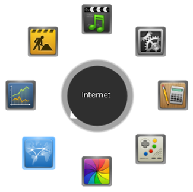

GNOME-Pie
Dieser Artikel wurde für die folgenden Ubuntu-Versionen getestet:
Ubuntu 14.04 Trusty Tahr
Zum Verständnis dieses Artikels sind folgende Seiten hilfreich:
GNOME-Pie  ist ein vielseitiger Anwendungsstarter. Während andere gängige Anwendungsstarter wie das Dash von Unity oder die Aktivitäten-Ansicht der GNOME Shell primär auf die Verwendung mit der Tastatur und die Eingabe von Anwendungsnamen zum schnellen Starten der Anwendungen ausgelegt sind, verfolgt GNOME-Pie einen anderen Ansatz: Es setzt das Fitts'sche Gesetz um.
ist ein vielseitiger Anwendungsstarter. Während andere gängige Anwendungsstarter wie das Dash von Unity oder die Aktivitäten-Ansicht der GNOME Shell primär auf die Verwendung mit der Tastatur und die Eingabe von Anwendungsnamen zum schnellen Starten der Anwendungen ausgelegt sind, verfolgt GNOME-Pie einen anderen Ansatz: Es setzt das Fitts'sche Gesetz um.
Beim Aufruf von GNOME-Pie werden vordefinierte Anwendungen oder Funktionen in kreisförmiger Anordnung (dem sog. "pie", deutsch: Kuchen) um den Mauszeiger eingeblendet. Die eingeblendeten Anwendungen (die sog. "slices", deutsch: Kuchenstück) können dann mit der Maus direkt ausgewählt werden, wodurch kein Wechsel der Hand von der Maus zur Tastatur oder ggf. das Bewegen des Mauszeigers zum anderen Ende der Arbeitsfläche nötig werden.
Die Funktion von GNOME-Pie geht allerdings über das bloße Starten vordefinierter Anwendungen hinaus, so kann man über GNOME-Pie beispielsweise auch individuelle Starter oder Ordner aufrufen sowie Audio- oder Videoplayer steuern. Erfolgreich getestet wurde das Programm in Kombination mit Unity und GNOME 3.

Installation¶
GNOME-Pie ist nicht in den offiziellen Paketquellen enthalten, aber der Programmautor Simon Schneegans bietet ein "Personal Package Archiv" (PPA) [1] an.
PPA¶
Die bereitgestellten Pakete befinden sich noch im experimentellen Stadium.
Adresszeile zum Hinzufügen des PPAs:
ppa:simonschneegans/testing
Hinweis!
Zusätzliche Fremdquellen können das System gefährden.
Ein PPA unterstützt nicht zwangsläufig alle Ubuntu-Versionen. Weitere Informationen sind der  PPA-Beschreibung des Eigentümers/Teams simonschneegans zu entnehmen.
PPA-Beschreibung des Eigentümers/Teams simonschneegans zu entnehmen.
Damit Pakete aus dem PPA genutzt werden können, müssen die Paketquellen neu eingelesen werden.
Nach einer Aktualisierung der Paketquellen kann folgendes Paket installiert [2] werden:
gnome-pie (ppa)
 mit apturl
mit apturl
Paketliste zum Kopieren:
sudo apt-get install gnome-pie
sudo aptitude install gnome-pie
Benutzung¶
Öffnen¶
Das Programm kann über den jeweiligen Anwendungsstarter der Benutzeroberfläche oder über den Befehl gnome-pie im Terminal geöffnet werden [3].
Einstellungen¶
Nach Aufrufen des Programms öffnet sich das Einstellungsfenster. Hier findet sich bereits eine Reihe vordefinierte Pies, die nach Belieben geändert werden können. Außerdem kann man sich eigene Pies individuell zusammenstellen. Um die einzelnen Pies aufrufen zu können, werden ihnen Tastenkombinationen bzw. zusätzliche Maustasten zugeordnet. Es können zudem folgende Zusatzoptionen für das Aufrufen der Pies ausgewählt werden:

| Zusatzoptionen der Tastenzuweisung | |||
| Zusatzoption | Bedeutung | ||
| Turbo-Mode | Der Pie schließt sich automatisch, wenn die Tastenkombination losgelassen wird | ||
| Verzögerte Aktivierung | Der Pie öffnet sich erst nach längerem Gedrückt-Halten der Tastenkombination | ||
| Zentriert auf dem Bildschirm öffnen | Der Pie wird nicht an der Position des Mauszeigers, sondern auf der Bildschirmmitte geöffnet | ||
Verwendung zusätzlicher Maustasten¶
GNOME-Pie lässt sich besonders effektiv mithilfe zusätzlicher Maustasten verwenden. An Stelle von Tastenkürzeln kann man bestimmten Pies auch zusätzliche Maustasten zuweisen. So können die Pies auf Wunsch durch Druck auf die Daumentasten oder auf das Mausrad geöffnet werden.
Es bietet sich allerdings an, dabei sowohl die Verzögerte Aktivierung als auch den Turbo-Mode zu verwenden. Die Verzögerte Aktivierung hilft dabei, Konflikte mit bereits vergebenen Funktionen (z.B. der Vor- und Zurücknavigation mit den Daumentasten im Browser) zu vermeiden, da die entsprechende Taste nun etwas länger gedrückt werden muss. Um nun aber zur Aktivierung und erneuten Deaktivierung eines Pies nicht zweimal hintereinander die Maustaste gedrückt halten zu müssen, kann man den Turbo-Mode anwenden, durch den die Aktivierung des Pies nur solange anhält, wie man die Maustaste gedrückt hält.
Links¶
Gnome-Pie 0.5.6 Released
- Blogbeitrag, 01/2015Docks und andere Anwendungsstarter
 Programmübersicht
Programmübersicht
- Erstellt mit Inyoka
-
 2004 – 2017 ubuntuusers.de • Einige Rechte vorbehalten
2004 – 2017 ubuntuusers.de • Einige Rechte vorbehalten
Lizenz • Kontakt • Datenschutz • Impressum • Serverstatus -
Serverhousing gespendet von